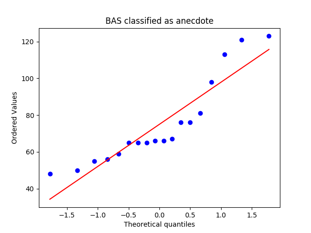
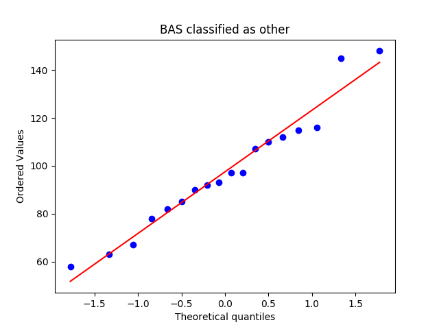
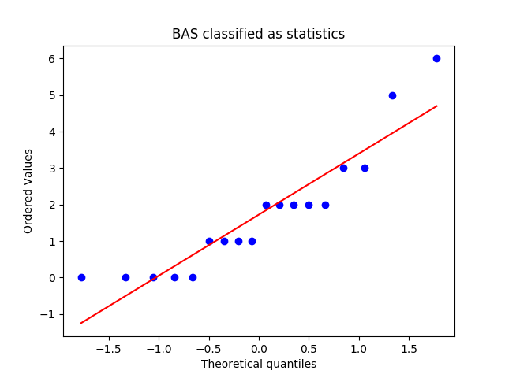
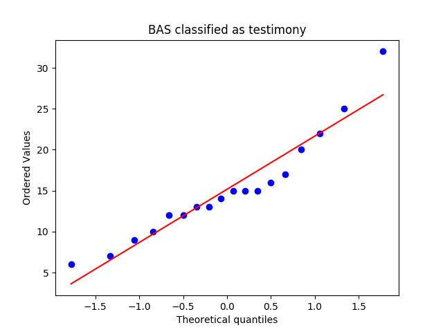
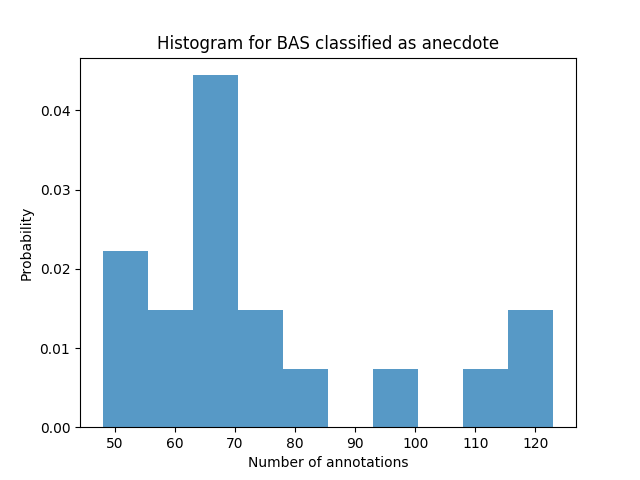
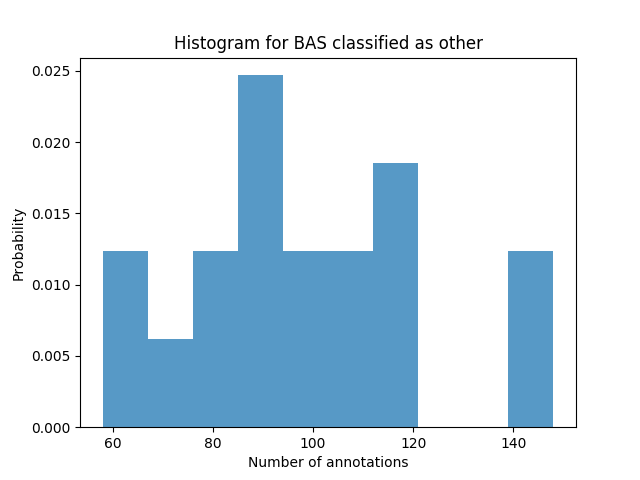
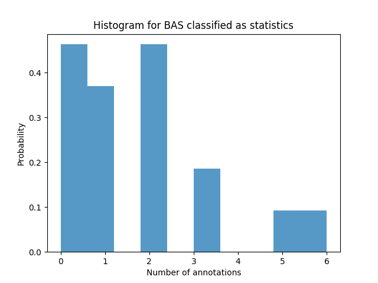
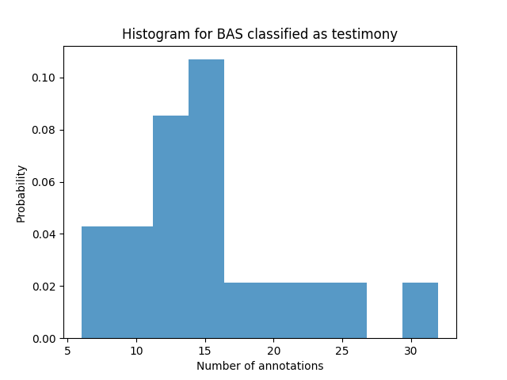
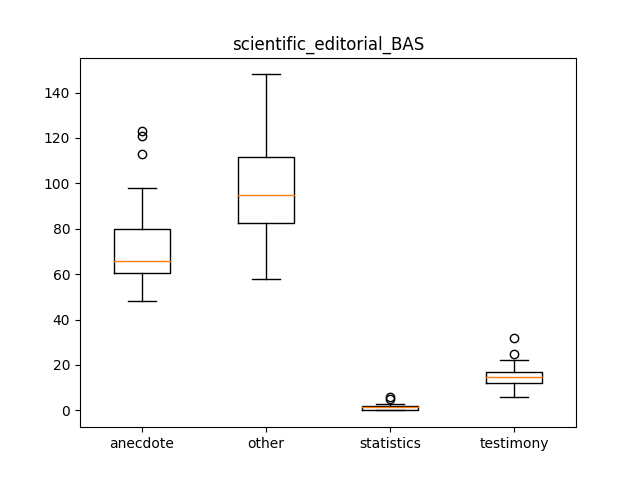

scientific_editorial_BAS
Describing the Data-Set
Mean, Median and Standard Deviation
|
anecdote |
other |
statistics |
testimony |
| median |
66.000000 |
95.000000 |
1.500000 |
14.500000 |
| mean |
75.000000 |
97.500000 |
1.722222 |
15.166667 |
| std |
22.764495 |
24.125252 |
1.660173 |
6.238322 |
QQ Plots




Histograms




Box Plot(s)

Normalization Test
stat: 0.846824407578, p-val:0.00754946982488
Not Normally distributed for BAS classified as anecdote
stat: 0.957449197769, p-val:0.553232073784
Normally distributed for BAS classified as other
stat: 0.856635093689, p-val:0.0107949310914
Not Normally distributed for BAS classified as statistics
stat: 0.925213992596, p-val:0.159883335233
Normally distributed for BAS classified as testimony
Significancy Test
Using friedmann-test
Using friedmann-test
using stats.friedmanchisquare
chisq: 51.8666666667
p-value: 3.19760066689e-11
statistic: 413.3125
p-value: 1.11022302463e-16
chi2:51.8666666667
ranking[1.0, 3.8888888888888888, 2.0, 3.1111111111111112]
Post Hoc Analysis (holm_multitest):
------------------------------------------------------
Comparing: statistics vs other
z_value: 6.71317113343
p_value: 1.9043877586e-11
adj_p_value: 1.14263265516e-10
--------------------------------------------------------------------------
Comparing: anecdote vs statistics
z_value: 4.9057789052
p_value: 9.30573029745e-07
adj_p_value: 4.65286514872e-06
--------------------------------------------------------------------------
Comparing: other vs testimony
z_value: 4.3893811257
p_value: 1.13673695576e-05
adj_p_value: 4.54694782306e-05
--------------------------------------------------------------------------
Comparing: anecdote vs testimony
z_value: 2.58198889747
p_value: 0.00982327450752
adj_p_value: 0.0294698235226
--------------------------------------------------------------------------
Comparing: statistics vs testimony
z_value: 2.32379000772
p_value: 0.0201367515503
adj_p_value: 0.0402735031007
--------------------------------------------------------------------------
Comparing: anecdote vs other
z_value: 1.80739222823
p_value: 0.070701144866
adj_p_value: 0.070701144866
--------------------------------------------------------------------------